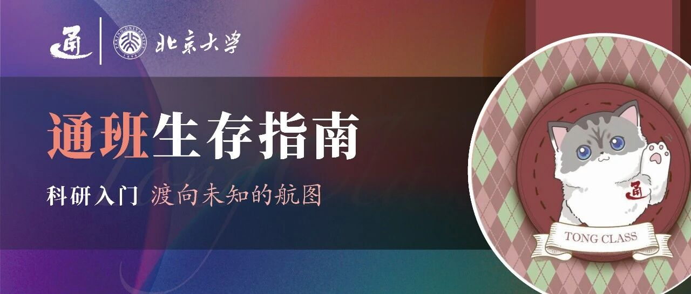

通班生存指南 | 科研入门·渡向未知的航图


笔者序
关于科研入门，起初我很热衷分享切实具体的建议，如何进组、如何选择第一个项目、如何联系海外导师、如何规划时间线，希望自己遇见的所有幸运和踩过的所有坑，都能分享予学弟学妹。后来难过失落地发现，公开分享的切实建议未必是好事，反而加剧了内卷。近些年随着信息差的消弭，大家开始科研的时间一年比一年早，如今大一新生们没保住绩点时就弥漫着对科研的焦虑。由此我意识到，作为新生指南的一篇，如果要谈论科研，大家更需要的是长期主义的、减少焦虑的、能帮助到所有人的文字。
00
AI科研入门资源推荐

AI方面的入门学习资源，往期的《自学资源推荐》已经推荐了很多课程和自学资源，欢迎同学们回顾查阅。
此外，朱毅鑫老师的主页中有一份汇聚了多位AI院老师和学长学姐心血的Getting Started List：
https://yzhu.io/s/research/getting_started/
Basics页面中包含了数学和计算机的一些自学内容，以及Mathematical English、Linux、Git、LaTeX等实用的Survival Skills。
The Essence of AI页面中包含了人工智能及AI各大领域的入门和进阶学习资源，以及朱松纯教授的文章和他对于AI的视角。
Into Research页面则分享了一些更顶层的对于研究和科学更本质的探讨，以及一些Writing和Presentation的小技巧。
"For students who hope to join a modern research lab in AI, this list should give you a relatively good starting point to learn at your own pace."
希望这份帮助了一代代通班人的清单也可以帮助大家很好地找到自己感兴趣的领域，踏上AI科研之路！
01
启程——配环境
对初入科研的本科生而言，能力和努力必要但不充分，资源和机遇同样关键。当然能被老师器重也是实力的一部分，但你可能会因为缺乏前期积累，不幸被随意抓去打“黑工”——这是许多人在入门时遇到的第一只“拦路虎”。
“黑工”不代表所有基础性工作都无意义。你需要辨别：究竟是完全被动、重复、不带来任何成长的事（例如处理数据或配置环境，从未接触idea、代码和实验），还是表面繁琐却蕴含学习机会的“有意义的脏活”。
如果你所做的并非全部属于前者，那至少不算完全的黑工。你也许一开始很不适应：课内知识干净、清晰、优美，而科研初期的工作却显得琐碎、无意义。但这是几乎每个人都必须趟过的水，没法绕开。一旦跨过这个阶段，掌握了基础技能，你就能够更从容地开展更自主、更有深度的科研。
我曾经花费近一年时间，才逐渐不再被这种琐碎感困扰。我找到一个提升意义感的方法：
不要只把“结果”当作意义，而是把“过程中学到的东西”当作意义。
比如，如果你的目标是尽快跑通一个仓库，或者尽快实现一个功能，那你遇到接连几十个命令行报错肯定很无助，辛辛苦苦花很久解决完一个，又遇到下一个报错，一切又重新回到原点，好像这么长时间努力毫无意义只是浪费。
但是你可以转变心态，每解决一个报错，上网查那么多资料，学到那么多知识，关于操作系统、命令行、PyTorch、NumPy、CUDA……这些才是科研中的核心知识，是在别处任何地方都没机会学习的。如果自己不亲身实践，没有人系统地做成课教你。
不仅如此，遇到问题、搜索资料、尝试方法、持续调试——这种解决问题的能力，也是无论科研或程序员工作最重要的核心技术壁垒。很多人误以为CS人的核心能力是coding，于是觉得bug很烦很dirty，但其实核心能力是debugging。代码GPT都能写，但把代码变成能跑的工程，这是难点所在。
所以，现在困扰你的“配环境”，并不是项目中无足轻重、应该草草略过的一步。相反，它至关重要——是你科研起步阶段最关键的训练。跨过这一关，才算真正踏入科研的大门，今后的路会越走越扎实。
总之，保持对知识的热忱，每一次“无用”的尝试在积累你独特科研视角和解决问题能力，让你成长为真正的独立研究者。科研的美不仅在抵达灵山，更在取经路本身。与诸君共勉！
02
远行——暑研和申请
进组后，指导老师自会带领你按部就班踏踏实实完成一个一个研究项目，我再怎么多舌也不如每个组指导得精辟入理。不妨讲讲下一件最让人焦虑迷茫的事——暑研和申请。
1
国内，尤其网络平台，对顶尖名校的过度追捧形成了某种“神话”。实际上，在国外的高校环境中，很少有人在意你来自哪个学校，导师是不是大牛，大家更关注你做了什么工作、掌握哪些技能。只要你在领域内有过硬的专业知识和学术实力，自然会有很多人愿意与你合作、主动与你交流。
相反，如果缺乏真正的实力，即便进入一个令人羡慕的研究组，未来几年发不出论文、学术交流时无话可说、想合作却提供不了有价值的见解，同样会非常痛苦。
就像越来越多人对“清北光环”逐渐祛魅一样——外在的标签更多是给不了解情况的外行人看的。在真正的同行眼中，定义你价值的，始终是你的工作本身。
2
不必过度焦虑connection。
如今本科生出国交流的机会越来越多，博士项目中来自清北乃至其他陆校的同学也逐年增加。实际并没有网络上传言的那么大的“陆本劣势”（网络往往放大负面情绪，因为人们需要宣泄的出口）。顶尖博士项目不仅对陆本而言难，在全球范围内都是最难进入的program。事实上，绝大多数顶尖院校自己的本科生，也申请不上本校的博士。我在很多美国CS课题组看到，招收博士的美本和清北本的比例1:1，陆本早已不是少数。（这句话写在2025特朗普2.0元年之前，不代表现状）。
不必急着过早出国混connection。如果没有扎实的学术基础，出去再早，独立做项目困难、与人交流吃力、甚至与导师沟通都成问题。
相比急于出国积累人脉，更重要的是先在国内打下坚实的学术基础，建立起对某一领域的系统认识，哪怕只有两个月出国机会，也不会成为障碍。你对一个领域经年累月积累的认知与思考，别人通过一次简单对话就能知晓透彻。
况且，国外生活成本高，顶尖学校也不缺打工实习生，更难找到真正愿意培养初学者的组——当然，如果你既不缺资金也不缺人脉，就另当别论。
3
没有“水”的方向，只有“水”的论文。
任何一个领域，总还有很多你还不知道的，还有许多可以学习可以深挖的。哪怕你心高气傲，课题组做的工作没有符合你心目中的理想的学术价值，也不用着急忙慌换课题换方向。不妨静下心来，看看还有哪些你可学习之处。既然来到了一个环境，就应尽可能吸收能学到的一切。
等有一天，对这个领域任何一个问题，同事无法解答，而你心里却有清晰的答案；当你觉得你的组确实不懂、或只会压榨劳动力、或发表的论文没有价值——那时才是你离开的时机。
毕竟，换方向是有时间成本和沉没成本的。
在起步阶段具体研究方向不重要，重要的是尽快掌握完整的研究方法和流程，再选任何感兴趣的方向都游刃有余。这样在新的方向寻求新的合作者也有积淀和说服力。切忌东一榔头西一棒槌，每一个方向只是浅浅尝试过，每一个方向都讲不出深刻的属于你自己的见解。那对于你希望找到的合作者，找你和找一个完全没有经验的小白有什么区别呢。
4
听人说xxx领域有意义，yyy领域无意义，不用全信。一个资深研究者总会对各类问题有自己的见解，“文人相轻”“百家争鸣”是学术活跃和自由的好事，不同学者对不同问题都有独立思考，一个人认为不重要不代表所有人都如此认为。
5
说了这么多，归结下来都是：少纠结一些选择，多做一些事情。
沉下心踏踏实实做出好的工作了，该来的回报自然会来。
希望或许能给学弟学妹一个和主流不一样的叙事，少一些焦虑和被评价体系束缚，更踏实、平静，专注在学术本身。
03
抉择——学术界vs工业界
科研、升学是很多北大学生的惯性，在更多学长学姐的信息资讯、不愿放弃积累的沉没成本、北大大部分学院的浓厚学术氛围下，或许很多同学从来没有考虑过本科就业。
也许不少人不适合读博，读博后会痛苦，但本科阶段未必有时间对学术界和工业界都体验过。最好能两边都试试，然而北大太卷，哪怕只坚定走一条路，都需要很大的运气和努力有好结果。比如大三升大四的暑假，是出国暑研还是企业实习，大概率只能二选一。所以是否读博，是一个重要的问题。
首先你需要喜欢科研。这毫无疑问，读博五年全部的工作是科研，除了科研几乎没有待遇上的好处，哪怕是为了拿到学历文凭便于就业，肯定也指望就业方向是研究岗。如果不喜欢科研，没有必要读博。
好的现在你喜欢科研，可以再仔细审视一下，喜欢的点是否只能在学术界实现？比如一个热爱CS的人可能会觉得自己科研最大乐趣的在于写代码、查资料、解决问题、持续学习，不过这些去当程序员也能实现。除此之外，如果你是喜欢研究，想新idea再做实验验证，那工业界同样有许多研究岗。
我个人总结了一些适合与不适合读博的类型，欢迎对号入座：
建议读博：
你有一个特别强烈困惑的好奇心驱使的问题想要研究，这个问题不直接产出经济价值因而只能在学术界有条件研究；
你特别渴望自由，自己决定工作休息时间，自己决定想研究什么问题；
你看好一个未来十年后会大有可为的图景，当前工业界没有人在做；
你想从事的职业对博士有绝对的硬性规定；
你喜欢单打独斗，不喜欢团队的沟通成本，希望做的项目自己作为核心贡献；
你比较不在意未来薪资，如果去工业界看到本科硕士同学薪资职级高于自己，当自己的领导，给他们打工，不会不平衡；如果去找教职看到工业界薪资比自己高、压力比自己低，不会不平衡。
建议不读博：
你对广泛的领域感兴趣，研究什么都很开心，都能满足意义感和好奇心；
你更重视工作和生活的明确界限、身心健康的基本保障，不希望产出成为唯一评价标准，不希望每一分没有投入在工作上的时间都心存愧疚觉得浪费；
你想为人类科学事业做贡献的领域需要工业界的大量资源；
只喜欢技术，不喜欢宣传和包装；
希望自己在做的工作有较为立竿见影的真实社会意义；
不喜欢自己的命运被掌握在审稿人手里；
担心五年和不喜欢的老板绑定，希望有跳槽的自由；
不喜欢申请经费时经济不独立；
说不清特别明确的理由为什么读博，但情感上就觉得一定要读博、读博最好；
觉得自己成绩好、paper多，不读博就浪费了；
希望跟上社会节奏成家立业，三十岁时有稳定工作。
根据统计规律，最终选择留在学术界的人是少数，在学术界能保持兴趣、理想、初心不感到挫败，需要极为难得的天赋、家境、机遇、运气等等。如果你了解更多选择的风险和回报，仍然义无反顾地投身于此，那是彻底的清醒的热爱。
关于路径选择，还有一个普遍规律。越顺应主流价值观，竞争越激烈卷度越大，越逆流而行，阻力越小。当社会上多数声音都觉得A好、B不好，很可能大家说对了，也有可能大家对市场有错误估值，存在低买高卖的套利空间。过度喧嚣整齐划一的声音说一个专业火、一个职业火、一个路径火时，更需要冷静警惕的判断分析。相比追随潮流，更重要的是做自己最喜欢的、最擅长的事。
最终，无论你走哪条路，祝愿你顺风顺水，不后悔自己的选择。
04
守真——面对遗憾
以下是我劝慰一名匿名树洞洞主的话，ta从小梦想当科学家，大学为之付出了很多心血，却屡屡碰壁受挫。如果你迈过了以上的多道槛，抱有极大的理想和热情持续努力，可发觉在科研上的成果配不上你的付出，不知道这段话是否能让你得到一些宽慰。
换一个人生，不需要像dz一样努力，一样热情，没有想过自己未来要当科学家，大二进组时遇到带领的师兄师姐，导师足够重视，半年后就发出一篇顶会论文。积累了科研经验，本科再发出许多篇一作。申请到四大，受众人仰慕。不知道自己为什么要科研，不知道之后是否继续科研，科研这一条路相比其他的路到底哪里戳中自己，哪里“非此不可”。只是在众人的眼光和吹捧下走上了这一条路，未来读博漫长的五年更加迷茫、痛苦。读博读不下去，退学。又或能读下去，毕业之后也不过一个平凡的在十字路口迷茫的人。
两个人，我更希望dz是在大二时受到导师重视的那一个。这样也许世界上真的会多一个探索人类前沿的科学家。
我希望dz幸运的同时，我也希望这个人不幸运一点，早一些撞上墙，也许就知道刹车。
不必羡慕特奖的人。他们只是由许多层幸运层层叠叠堆叠起来，他们的脚下是十倍同样努力却没有那么幸运的人。他们以为，只要付出努力就能获得收获，只要热爱就有条件追逐梦想。他们这样以为，因此他们继续向后辈诉说。因此后辈依旧以为。
我只能希望他们每一个人都确实有一颗和dz一样赤诚的心，真的能支持他们在科研的路上走很久很久。或者他们一辈子都足够幸运，永远不会遇到风雨。
dz眼里有光，心中有热爱，无论坎坷风雨，强烈的快乐和刺骨的痛都是切身的，辗转着追求一个个自己喜欢的工作，清醒、透彻地过了一生。
有可能你遇到足够好的资源，终于实现了成为科学家的梦想。有可能你发现了新的为之痴狂的梦想。有可能你一辈子都在企望着那个终生无法触及的梦想。
重要的是那份纯真的憧憬和虚妄的执念。那个疯狂的单纯的孩子。
希望每个热爱学术的人都会被学术界善待，希望最终选择留在学术界的人都真心爱学术不后悔。祝愿大家都能做出美好的工作！
关于通班：
撰稿 | 倪嘉怡
封面 | 严绍恒
排版 | 陈应涵